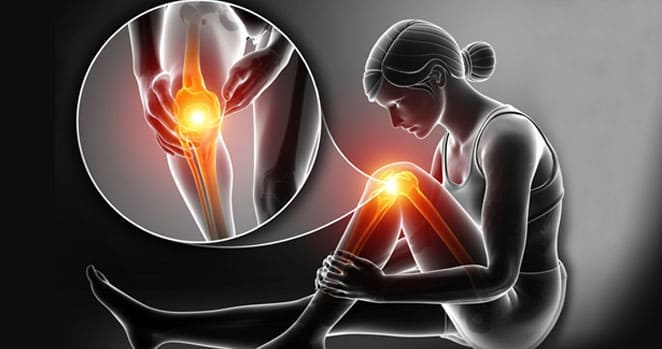
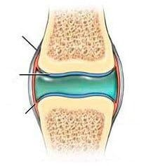
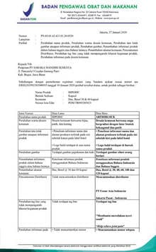
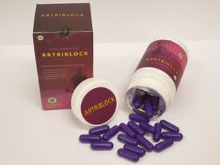
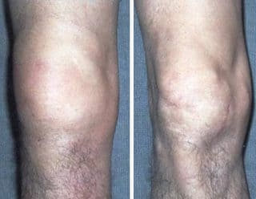
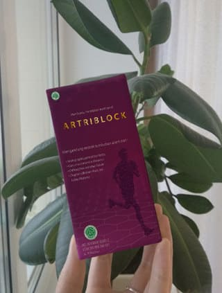
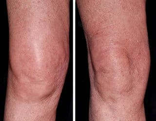

Edisi Khusus "Hari Ini Kesehatan" dengan Prof Gunawan Riyadi 17.05.2020
"Buka lembaran baru dengan kapsul penghilang rematik dan nyeri sendi."Editor: 1 dari 8 orang mengalami masalah dengan herniasi, rematik, seperti rheumatoid arthritis. Penyakit kompresi saraf memang bukan pertanda penyakit kronis, tetapi kualitas hidup orang-orang yang pernah mengalaminya akan memburuk sejak gejala awal penyakit ini. Setelah itu, ketika beraktifitas akan terasa tidak nyaman dan akan menimbulkan masalah lain seperti hernia, gangguan metabolisme dan masalah pergerakan tubuh lainnya. Apa yang akan kita bicarakan hari ini adalah bagaimana cara menghilangkan masalah sistem muskuloskeletal dan kembali menjadi sehat dan lincah!
Selamat siang
Dalam beberapa tahun terakhir, saya memiliki kesempatan untuk berbicara dengan semua orang tentang masalah ini, penyakit yang terkait dengan sendi. Ada begitu banyak cabang yang mengatakan ada cara yang dapat menghilangkan rematik! Secara umum, dengan minum suplemen atau pembedahan. Dalam program kami, kami banyak berbicara tentang operasi plastik dan terapi, tetapi kami juga sering menggunakan terapi alternatif. Ini bukan hanya resep lama dari nenek moyang. Tapi resep ini diakui oleh Science Society dan dari pasien kita sendiri. Hari ini kita akan berbicara tentang kolagen, protein yang paling penting dalam tubuh, dan komponen lain yang termasuk dalam formula terbaru yang disebut - "Artriblock".
Telah dikonfirmasi bahwa terapi vasokonstriksi tidak efektif karena sebagian besar suplemen hanya sebagai penghilang rasa sakit tetapi tidak menyelesaikan penyebab masalahnya. Banyak juga kapsul lain yang mengandung bahan berbahaya yang dapat merusak organ dalam.
Pembedahan dianggap sebagai cara yang paling ekstrem. Bahkan operasi itu sendiri tidak menjamin hasil yang 100%. Beristirahat untuk waktu yang lama pun dapat menyebabkan komplikasi berbahaya
Tetapi jika menghilangkan rasa sakit hanya menyebabkan Anda menderita sepanjang hari dan tidak dapat hidup secara normal, Artriblock akan membantu memulihkan kekuatan jaringan yang terikat dengan beberapa bahan aktif yang spesifik.
Artriblock membantu banyak orang mengatasi banyak penyakit, bahkan Artritis reumatoid Osteoartritis Artriblock mengurangi peradangan dan mengurangi rasa sakit pada kondisi akut. Baik ligamen dan tulang rawan. Penelitian menegaskan bahwa osteoarthritis disebabkan oleh banyak hal seperti, aliran darah yang buruk, mengkonsumsi makanan yang tidak sehat, gaya hidup aktif, kekurangan sistem kekebalan tubuh, perubahan hormon dan kelainan fungsi sel. Itu berarti keseluruhan proses memiliki dampak langsung pada kesehatan. Karena itu Artriblock adalah cara paling efektif untuk memerangi penyakit
Tendon
Tulang rawan
Membran sinovial
Sinovitis yang kuat
Kemunduran
Tulang rawan
Tendon
melemah
Radang
Membran dan
Rematik
Sinovitis yang lemah
Sekarang Anda mungkin ingin tahu cara kerjanya. Saya akan menjelaskan kepada Anda. Artriblock mengandung bahan-bahan khusus yang merangsang produksi kolagen dalam tubuh. Kapsul ini akan membantu memulihkan sel-sel di dalam persendian yang mudah rusak, membantu memperkuat sistem persendian, membiarkan tubuh menyerap nutrisi ke dalam tubuh dan meningkatkan sistem enzim dalam sel. Artriblock juga memiliki keunggulan lain seperti, bermanfaat bagi sistem jantung, membantu membersihkan pembuluh darah dan meningkatkan sirkulasi darah.
Formula khusus kapsul ini telah dikonfirmasi efektivitasnya serta sudah lulus dari berbagai penelitian.
 Klik untuk memperbesar gambar
{kind=link}
Hari ini, kami telah mengundang salah satu pasien kami untuk bergabung dalam program kami. Safitri Indah adalah pasien yang telah merasakan manfaat dari produk Artriblock:
Prof Gunawan: "Halo Bu Safitri, bisakah Anda mengatakan kepada pembaca kami bagaimana kondisi Anda sekarang? "
Safitri: "Saya merasa lebih baik setiap harinya. Nyeri rematiknya mereda dengan sangat cepat dan saya merasa lebih kuat dari biasanya. Sel-sel tulang saya menjadi kuat dan metabolisme saya semakin cepat. Saya bisa makan semuanya dan juga bisa jogging dengan nyaman. Kapsul ini telah menjadi solusi untuk masalah saya. Rasa sakitnya hilang dan saya menjadi sehat kembali. Yang paling penting adalah keefektifan kapsul ini yang menghilangkan semua masalah sendi saya. Mudah dikonsumsi dan sangan nyaman dibawa kemana-mana. Namun yang lebih penting adalah bahan alami Artriblock membantu mengembalikan tulang rawan dengan merangsang produksi kolagen di kulit. Dokter lain menjelaskan gejala dengan istilah yang sulit dimengerti dan mencoba menjual obat mahal kepada kami yang tidak menyelesaikan masalah. Saya tahu betul karena saya sendiri sudah mengalaminya."
Prof Gunawan: "Bisakah Anda memberitahu kepada pembaca kami bagaimana Anda menggunakan formula hebat ini?"
Safitri: "Tidak sulit sama sekali. Cukup minum kapsul ini 2 kali 2 kapsul sehari setelah makan. Kapsul ini hanya dapat dipesan di situs web resmi. Jika ada yang ingin membelinya, silahkan isi informasi di bawah ini dan tinggalkan nomor kontak Anda. Harga produk ini sangat murah dibandingkan dengan uang yang saya habiskan untuk biaya pengobatan selama ini. Setelah menggunakannya untuk pertama kali, saya merasa lebih baik. Hal semacam ini harus dicoba sendiri supaya bisa merasakannya sendiri."
Seperti yang Anda lihat cara untuk menjadi sehat tidaklah sulit. Artriblock dapat dipesan dengan mengisi formulir di bawah ini.
24.05.2020
Ikuti kami di
Kesehatan hari ini
Suka23 947 Pengguna menyukai kesehatan hari ini
Dandi
Fahri
Junaidi
Putra
 Edi Cahya
Edi Cahya
Ulasan
Saya memesan Artriblock dengan sangat mudah. Di Hari berikutnya saya langsung mendapat barang dan bisa mencobanya. Saya akan memberitahukan hasilnya nanti. Terima kasih.

Pada awalnya, saya kehilangan web ini dan tidak dapat menemukannya. Akhirnya saya menemukannya lagi dan ingin membagikan hasilnya karena ini bekerja dengan sempurna. Setelah menggunakannya sampai terapi akhir, semua masalah persendian hilang. Saya merasa seperti pria yang lebih muda 20 tahun! Terima kasih Artriblock.

Halo, saya ga mau banyak bicara, terima kasih Prof Gunawan karena sudah membantu saya !!! Setelah menggunakannya, saya langsung merasa lebih baik. Rasa sakitnya hilang, suasana hatinya saya juga telah membaik. Sekarang saya bisa mendapat kebahagiaan saya lagi. saya hanya menggunakannya selama 10 hari. Terima kasih banyak.
Setelah membaca hasil orang, itu terdengar hebat sekali. Saya akan mulai besok juga. Semoga bisa seperti orang lain. Saya memesan Artriblock dan menerimanya dari kurir. Terimakasih banyak!

Saya telah menderita penyakit ini sepanjang hidup saya. Semoga kapsul ini akan membantu, saya sudah pesan.
Saya membelinya sebagai hadiah untuk Hari Ayah, Ayah saya 25 tahun lebih tua dari saya, tetapi setelah menggunakan Artriblock saya lihat Ayah saya dapat dengan mudah menendang bola dan bermain kerjar-kejaran bersama cucunya. Saya juga menggunakannya. Saya pun merasa lebih baik dan nyaman untuk bergerak :)
Halo, informasinya sangat lengkap. Kelihatannya mustahil tapi saya penasaran dan saya akan coba! Saya sudah pesan dan tinggal menunggu barang nya datang!
Banyak ulasan bagus, teman saya punya masalah yang mirip seperti ini. Saya akan mencoba merekomendasikannya untuk dia.
Saya tidak yakin jika Artriblock benar-benar dapat membantu saya. Saya tidak bisa melakukan apa-apa sekarang. Rasanya benar-benar tidak nyaman.
Kemarin kurir nya sudah datang! Sebenarnya, itu bukan milik saya, tapi saya membelinya untuk pacar saya dan dia tidak tahu. Pacar saya sudah putus asa karena ia telah mencoba segalanya, termasuk pijat dan obat-obatan yang menyebabkan perutnya sakit. Ketika dia tidak bisa melakukan apa-apa dan dia putus asa. Lalu saya datang dan membawa Artriblock ini. Setelah ia konsumsi, dia bilang sendi nya sudah semakin kuat dan dia bisa jalan dan berlari dengan nyaman. Terimakasih!
Pacar saya menderita radang sendi. Dia sudah menemui dokter dan sering ganti dokter. Saya sangat mencintai pacar saya dan menemaninya untuk melakukan semua prosedur ini tetapi tidak ada yang dapat membantu mengurangi rasa sakitnya. Kapsul ini harapan terakhir kami. Kami bersyukur karena dia sudah menjadi lebih baik sekarang! Anda bisa lihat sendiri hasilnya :)

Luar biasa. Tetapi banyak ulasan bagus untuk produk ini. Saya akan mencobanya setelah barangnya sampai.